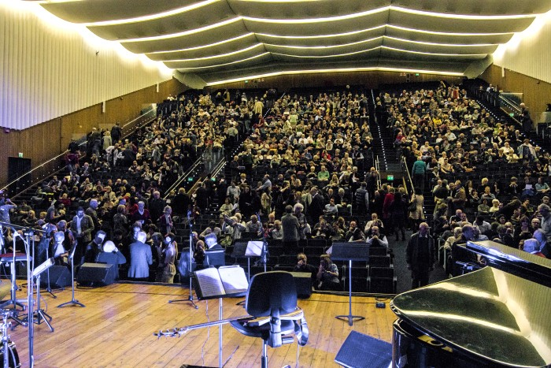
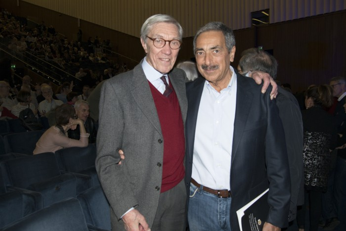

Conservatorio di Milano - Sala Verdi.
29 marzo 2017
Una sala gremita all'inverosimile, ci ha atteso per la seconda volta al Conservatorio di Milano.
In sala spettatori di eccezione, l'onore di avere tra noi il grande Franco Cerri e il giornalista sportivo, scrittore, attore e autore teatrale e grande esperto musicale Marino Bartoletti.
 